-

Welcome to the Kullaleden Trail, marked with orange, taking you forward step by step.

Kullaleden is 72 kilometers around the Kullahalvön peninsula from Helsingborg city center via Kullaberg Lighthouse to Utvälinge.

Kullaleden offers a great variety of experiences along the way. Here you find everything including the medieval city centre of Helsingborg, beautiful views over the straits from the plateau heights, the well-known Sofiero Palace, Kulla-Gunnarstorp and Krapperup Estates, beaches and picturesque seaside villages, and Kullaberg’s dramatic cliff formations.
- Our Responsibility

Since prehistoric times, the sea has been a valuable resource. We have over-utilised the sea for a long time. Now we understand that we need to do more to keep the sea healthy. Trends are changing and we are now well on the way, each doing their part.
The burden of nutrients entering the sea is decreasing; shipping is becoming cleaner; an increasing number of wetlands are being created and awareness is increasing among people in general.
- The Harbour Seal

The Harbour seal is found on the Swedish west coast, as well as in two small colonies in the Baltic Sea, at Måkläppen and in the Kalmarsund Strait. The seals we see in Skälderviken belong to the colony on the skerries at Väderö in Halland.
The male grows to about 170 centimetres and weighs about 100 kg, while the female, which is slightly smaller, grows to 160 centimetres, weighing around 80 kg. The colour is speckled grey.
- Sea Plants

Plants are crucial to life in the sea. With the help of sunlight, plants transform carbon dioxide into energy-rich plant material, and they create oxygen. There are two different types of plant in the sea: flowering plants, which have roots and grow in soft bottoms, and Kelp which grows on hard bottoms, attaching itself with the help of a holdfast.
Large perennial algae such as Bladderwrack and Toothed wrack are important to the ecosystem.
- Swimmer's Bay

The Swimmers’ Bay
The food store and nursery of the sea.
Shallow bays are highly productive. A lot of nutrition comes here from land and the spring sun quickly warms the shallow water. On a fine April day, while it is still 5-6 °C out at sea, it can be 10 to 15 °C near the shores. At a depth of 1m, biological production can be 10 times greater than at 10 m deep.
April - Brown shrimp and Littoral crab come in from deeper water.
May - Hundreds of small juvenile plaice drift in from the spawning grounds out in the Kattegatt.
June - There is a veritable invasion of Blunt gapers, cockles and sea mussels.
July - Newly hatched Brown shrimp and Littoral crab drift in to the bay on the current.
Autumn - In the autumn when it becomes cooler in the water, the fish, crabs and shrimp disappear to deeper water.
Winter - In winter there is calm in the swimmers’ bay.
- The Porpoise

The common porpoise Phocoena phocoena.
The only whale to constantly inhabit Swedish waters, the porpoise is endangered and red-listed. However, in Skälderviken and the north of Öresund there is still a good chance of seeing a porpoise.
The Smallest Whale
The porpoise grows to approximately 170 cm. The primary way to recognise a porpoise is the low, triangular dorsal fin.
An elusive deep diver When necessary, porpoises can dive to a depth of 240 meters.
- Coastal Waters

No two stretches of coastline are identical. We find cliffs, cobblefields, gravel, sand and clay. The properties of water range from somewhat brackish to the east to genuine seawater to the west. We therefore have a greater abundance of species to the west, while the Baltic Sea has a unique mix of saltwater and freshwater species.
The form and shape of the landscape create different conditions for animals and plants, both above and below the sea surface. Rock bottoms have their populations and soft bottoms have theirs.
We know today that waters along the coasts are of considerable importance to all sea life. No two stretches of coastline are identical. We find cliffs, cobblefields, gravel, sand and clay. The properties of water range from somewhat brackish to the east to genuine seawater to the west. We therefore have a greater abundance of species to the west, while the Baltic Sea has a unique mix of saltwater and freshwater species.
- Sea Meets Land

The coastline is a unique area which is affected by what happens both on land and in the sea. Today this area is hotly discussed due to the rising sea levels.
The shores along Skälderviken are varied, from sandy to rocky. Farthest inside the bay there are white sandy beaches, while the opening to Kattegatt comprises rocky shores on both sides. Kullaberg rises in the south, a primary rock of horst offering high, steep shores.
- Skälderviken

Skälderviken is a bay on the Kattegatt. The area features genuine salt seawater and, via Öresund, the brackish water of the Baltic Sea. This fact means that the exchange of bottom and surface water is made more difficult, which can lead to a shortage of oxygen (hypoxia) on the seabed. The risk of oxygen shortage increases further when too many nutrients from land flow into the bay.
The whole of Skälderviken is an important area for life in the sea. Some areas are protected as nature reserves or are Natura 2000 areas.
Skälderviken is a spawning area for herring and is an extremely important breeding area for flatfish such as European plaice and Common dab. Other commercial fish species such as Cod, Lumpsucker and Eel hunt their prey here.
In the same way, the Eider and other diving ducks find important nutrition here. The bay is home to both seals and porpoises.
- Rocky Bottoms

Many marine species require genuine salt water. In the coastal waters of Skåne we find these creatures only in the northern part of Öresund and in the Kattegatt, above all at Kullaberg. Below the pycnocline boundary out at the Kullaberg rocks, it is dark and cold but abundant in fauna in beautiful colours.
Kullaberg is the southernmost outpost of the purely marine species – further south the water is too brackish. At Kullaberg we find coral species – corals are animals not plants.
-
Welcome to Western Kullaberg.
- Austrian Pine
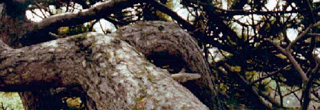
The path here, down to Akersberget, meanders in a valley between the boulders and rocks. Against the slopes are dense thickets of blackthorn and elder where lots of small birds tend to seek shelter. Everywhere in the valley there is a large adult pine trees with twisted, winding stems and gray cracked bark. The needles in the broad crowns are long and strong. The species of pine that this is the issue of units black pine (Pinus nigra) and implanted on Kullabergs open land and other windy places along the Sound coast in the late 1800s.
- Åkersberget

We are behind Åkersberget, a noticeably rounded promontory jutting out into the sea, which can be glimpsed to the south behind the bushes. The headland takes its name from a field (= åker) which was once here. It was abandoned and became overgrown, mainly with blackthorn bushes. On the other side of the fence, the bushes have been cleared and a pasture with fine meadow grass and flowers is emerging. Walk down the path to the side through the blackthorn thickets to the viewpoint above the vertical drop. The blackthorn has been sculpted by the wind into low, sweeping forms.
Once there, towards the westernmost point one can enjoy one of the best views of the rocky, indented coastal cliffs of Kullaberg. The inland ridges end in jagged promontories, and fragments remain in the water in the form of small inlets or sea stacks. The inlets between the promontories feature boulder beaches, which on Kullaberg are called 'malar' (‘grinders’) since the stones make a characteristic grinding sound as they are rolled against each other by the waves. This also means that the stones are worn round and completely smooth.
The bedrock of the Kullaberg consists of gneiss, which has however been split both along and across the main orientation of the ridge. Magma has welled up in the cracks, forming the dark brown and black rocks amphibolite and diabase. When looking out over the coastline, one can easily observe this variation, with stretches of light red gneiss alternating with black-brown amphibolite cliffs. In addition, all the cliffs are black at and just above the waterline. This is due to the dark-coloured black tar lichen (Verrucaria maura). The tops of stones and rocks are often coloured yellow by for example common orange lichen (Xanthoria parietina), which thrives in the nitrogen-rich environment created by bird droppings. The sides of the stones can be coloured grey by Ramalina lichens, which thrive in the salt spray from the sea.
The sea also hollowed out caves in the cliffs during the 'Littorina' period 5,000 years ago, when the sea level was roughly 10 m higher than now. Directly below us lies the Lahibia Cave, 6 m deep, which can be reached by climbing down at the signpost at the top of the cliffs to the right. Several smaller caves lie close by. Halfway out towards the lighthouse, behind the black promontory, lies the Silver Cave, which was created by quarrying. In the 16th century, it was thought that the fragments of mica visible in the rock were silver, and attempts were made to extract it until it soon became evident that the assumption was false.
Continue walking along the Red Path. Shortly before the transition to pasture, there is another side path leading down to Åkersberget and Åkerslån, a small inlet reaching far into the hillside. Coal was once unloaded in this inlet. It was then carried, often in large pieces, up to the lighthouse along the road which is now a path – truly exhausting work. Scuba divers can start from the inlet and follow a series of markers on the underwater drop-off, showing very clearly the development of the typical bands of organisms at different sea depths.
- Oak Woods
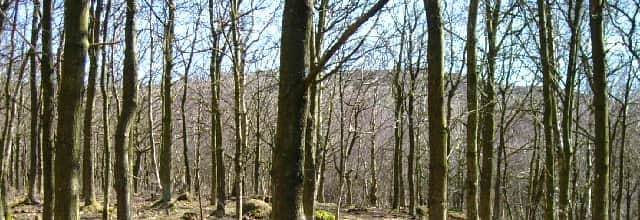
We are now on what was previously a large grazed heathland in the westernmost part of Kullaberg near Igla Bog. Until the 1960s, the area was the site of a planted forest of Austrian pine, which was blown down by a series of severe storms. It was then re-planted with oak, because this species can be considered native to north-western Skåne. (See more information under section 9).
The oaks are to some degree mixed with birch, which sets itself naturally on this type of land. However, the planted area will not be allowed to develop into a forest: in the future it will constitute part of the pasture land now established at Western Kullaberg. Livestock are allowed to enter the woodlands to graze, and it will be thinned out in stages. The result will be an open pasture with occasional oak trees, a type of landscape which was probably common on the mountain before the large-scale felling that took place in the centuries following the 16th century.
Walking through the woods to the north, one arrives at Igla Bog, a stretch of wetland, surrounded by sallow and willow, with tall-growing species of sedge and wetland plants.
- Hagetorn Hill
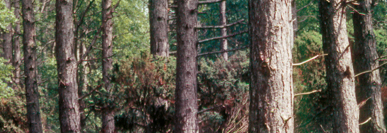
- Kulla Bog
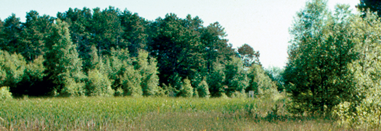
- Birch Woods
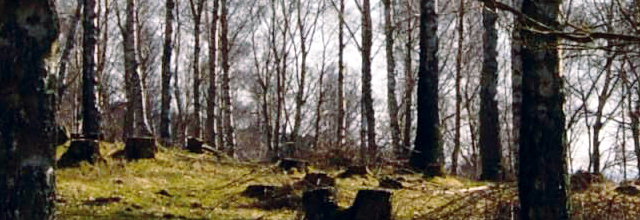
- Juniper Thickets
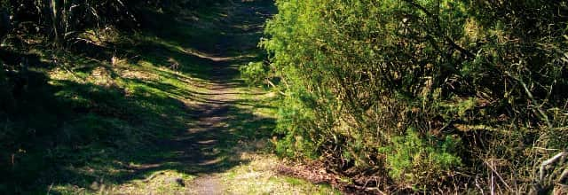
- Kullagarden
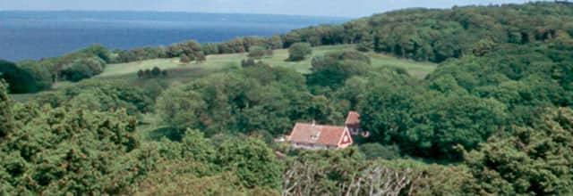
- Oak Shrub
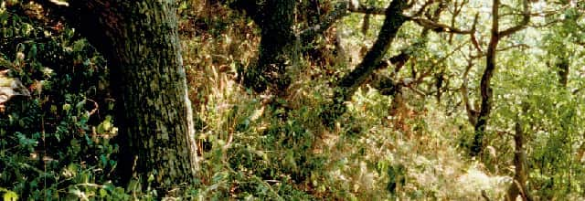
- Ransvik
- Beech Woods
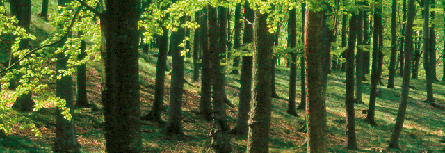
- Hjorthagen
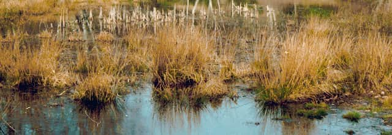
- Josefinelust
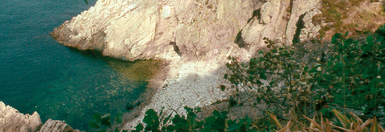
- Cliff-top Woods
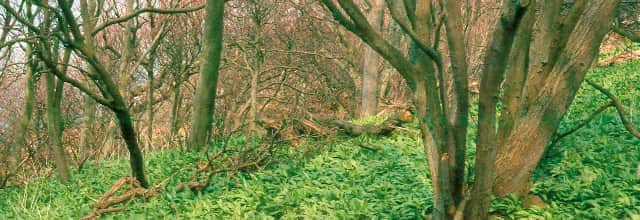
- Ablahamn
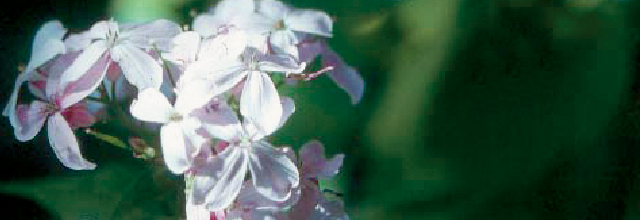
- Visitgrottan

- Kullalå
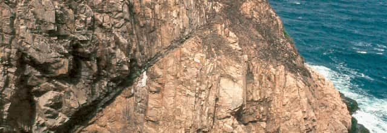
This is one of the deepest and steepest ravines leading from Kullaberg to the sea. At the bottom, there is a small rocky area and a marshy meadow which is mostly in the shade. The sea inlet is called 'Kullalå' and despite the cliffs all around it has been used as a landing place for boats. In a description from 1825 it says that 'the Devil’s Ravine is an abyss with vertical walls, in which the sea, frothing and green, storms in'.
During the tourist boom around 1900, Danish tourists christened the cliff opposite this place 'Palnatokes skränt (Palnatoke’s Cliff)'.
Legend has it that Harald Bluetooth, son of the Danish king Gorm, travelled to Kullaberg together with Palnatoke, the chieftain of the island of Fyn, in order to go skiing. Palnatoke considered himself a better skier than King Harald, who angrily forced Palnatoke to ski down the most dangerous of the cliffs. After what was practically a free fall, Palnatoke landed at the bottom of the cliff - in one piece! (The legend features in A. Oehlenschläger’s tragedy 'Palnatoke').
-
Welcome to the Sights of Heritage, marvels of Swedish culture and history, transporting you into a rich and colorful past.
- Kärnan Castle

Kullaleden and Öresundsleden merge at Kärnan, which is the last remnant of the Helsingborg castle. The 34 meter high tower from the 1300s is later replaced with a tower from the 1100s. This is where the Danish Queen Dorothea and Barbara Brahe from Krapperup met before a pilgrimage to Rome in 1475. The surrounding buildings were demolished following the war in the 1600s. A wall chart below Kärnan illustrates the earlier state of the site. In the 1800s the Swedish flag through the work of Alfred Hellerström received its battlements and is now hung on top of Kärnan, which got it´s colors from Oscar Trapp. Trapp visited the National Museum in Amsterdam and managed to get a piece of a looted Swedish flag. Different manufacturers reproduced the colors differently and that´s how the bright colors were established.
- Sofiero Palace

In 1905, Oscar II's grandchild Prince Gustaf Adolf, future King Gustaf VI Adolf, and his wife, crown princess Margaret received the palace as a wedding gift. They renovated the palace and started the large Rhododendron garden for which the palace is known today. Prince Gustaf Adolf become king in 1950 and until 1973 Sofiero was his and his second wife Lady Louise Mountbatten's official summer residence. It was supposedly the King's favorite place.
Prince Gustav Adolf and his wife Margaret had Sofiero as a wedding gift in 1905. The English-born Princess Margaret was very knowledgeable garden and gave the garden a prominent role. She believed that people would use fewer varieties, but many out of each and put the specimens closely together, something that still lives on, for example, in Blomstergatan that bears her name. Crown Prince Gustaf Adolf, whose main interest was the rhododendron garden continued work after Margaret's death, even after he was king. Approximately 10 000 copies of the rhododendrons attracts thousands of visitors every year, especially during the flowering period. On the castle's website you can learn the latest information on flowering. There are also descriptions of the hikes illustrating the royal summer life, gentry and servants, Sofieros flowers and the sculptures found in the park.
King Gustav VI Adolf bequeathed the entire plant to the city of Helsingborg which took over in 1974. The park, which in 2010 was named Europe's best park, is also used for outdoor concerts and other events.
- Hittarp

In 1717 there was a military fortification in Hittarp. During World War II was considered Hittarp have a position that could be sensitive to a possible hostile attack. Parts of the village was then cordoned off and those who lived inside the barricades were showcasing special passports. Still, there are different types of armor left from Skåne Line, which got its popular name, Per Albin-line, for the then Swedish Prime Minister. (Image taken in Molle) At Serpentinvägen subterranean radar station shown at times. Its antenna sticking up among the treetops.
- Gunnarstorp

The sea erosion that occured Below Kulla Gunnarstorp castle has affected the shoreline and because of this laid bare the sandstone ground, a reminder of when the sea level was 6-7 meters higher, approx. 4000-7000 years ago. The vertical sandstone ledges are saturated by water. The area is a nature reserve with beech wood, gullies and Bronze Age mounds and has been inhabited since prehistoric times.
- Domsten
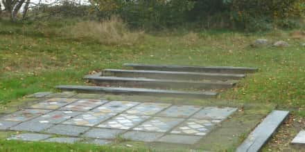
Helsingborg Camping Club’s operations were established in 1932 and are unique. It was initially all about camping, but in the 1940s, white Masonite cottages replaced the tents, and they are set up each spring. In the autumn the cottages are dismantled and the foundations are all that remains, the trail run through the area. At “Fornminnet” there is a bus stop along the forest slope for those want to start or end their hike. . The stop probably got its name due to the Bronze Age mounds and six Neolithic settlements recorded in the vicinity.
The name “Domsten” has nothing to do with law making. It occurs early as “Dompäng”, a wet meadow, which is situated inside “Domasten”. “Domp” derives from the German word “damp” which concerns mist and steam. Which “rock” (sten) the name refers to is unclear.
- Domsten/Viken
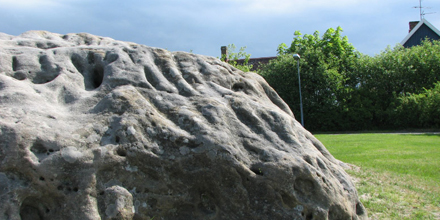
A colony of harbor seals frequently spends time on the reef just northwest of the windbreak. Approx. 150 seals can be seen at the same time laying on the rocks or playing in the water towards the shore. Sea eagles appear sometimes on cold autumn and winter mornings. You can find Giant horsetail, equisetum telemateia, sea lyme-grass and European marram grass, growing on the dunes and wetlands.
The grooves emerged during the Neolithic period and were later appropriately laid by the shore. A strait separated the Kulla peninsula from Jonstorp to Viken.
- Viken
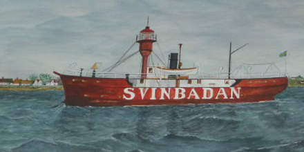
Many foreign ships ran aground outside Svinbådan. There are tales of wreck auctions in the mid-1800s where large amounts of salvaged goods were sold. During the 1850s, life-saving stations were established around the district, among them where the ones in Viken (est.1857) and Svinbådan (est.1866). The lightship in Svinbådan was replaced in 1960 by the fixed beacon that you see along the hike trails.
Peder Wessel was an ennobled Tordenskiold, and was one of the many who sunk at Viken. In 1717, Peder Wessel was on his way from the Swedish coast to Copenhagen to explain to the King why he’d failed to take Strömstad. It has also been claimed that the ship’s chest was buried in the sand by the golf course at Viken. Several have looked, but no one has found it.
Many vessels have run aground along the coast. In 1850 the koff Jantina ran aground off of Viken and 80,000 pounds of damaged coffee was auctioned.
In 1851, 200,000 pounds of Java sugar, 200 quarts Batavia Arrac, cognac, rum, grain brandy, chicory were sold and the wreck of Louise on its way from the East Indies to Copenhagen.
- Höganäs
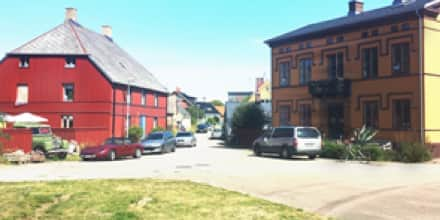
The architect Cyrillus Johansson was hired when Höganäs was to install municipal water in 1932. Keep your eye on the water tower and walk into Hamngatan between a red timber building and a yellow house with brown eyebrows above the windows. The old bridge remains under the plot of land. The red building is now a private residence, but has housed both an inn and customs house. The building was moved here, probably from Helsingborg around 1800, and served as a "traveler’s inn".
- Mölle
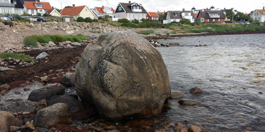
We’re now approaching Mölle and the residential area Gylleröd on the right. Mölle chapels stepped gable tower sticks out of the greenery in the summer. The artist Gunnar Valentin used local models in producing the altarpiece in the medieval-inspired chapel. The hill above the church is a sea of blue from early hepatica around spring. Göran Malmqvist wrote:
“Delightful music: Last year’s rustle of leaves as a comp to the hepatica choir”.
Mölle could have been an ideal landing site for a possible enemy during World War II. Defences were created in order to prevent this including blasting the harbor pier, if nothing else helped. Carved crosses on the edge of quay still mark the explosive chambers.
An engraved water-level gauge on Mågehallen indicates the water level. In addition to the graduations, the year 1750 and the initials AMS and AMA have been carved in. The military engineers A M von Strussenfelt and A M von Arbin had visited Mölle to investigate whether conditions existed to ship out stone to the citadel in Landskrona.
A water-level gauge is an instrument for measuring the water level. This particular water-level gauge may have been built as a part of the discussions in the 1700s about “the sea’s rising and falling”.
- Solviken
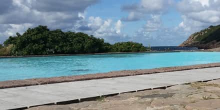
We’ll soon arrive at Solviken. Here you’ll find proximity to ladies’ bathing and a children's pool. There used to be a pier for shipping stone from the quarry, which was below Barakullen. In a painting from 1867 you can see that the quarry made it impossible to walk further towards Ransvik. Kullabergs Natur AB was established through a collection in 1913 in order to prevent Kullaberg from being sold from Krapperup for industrial quarrying. Western Kullaberg is now owned by the Swedish Environmental Protection Agency, and has since 1971 been a nature reserve managed by the County Board. Accessibility has improved since stone quarrying stopped, however in the late summer and autumn, it’s beneficial to relax here. If you have the patience, you can find the rare Purseweb spiders where the male is about to enter the females burrow during winter.
After the sea-worn limestone pillar formation with spotted cat's ears that extend towards the crevices the trail will continue with high steps and paths along the cliff edge. Along the way you’ll find handles, handrails or ropes to hold on to. Current hiking terminology labels this route as medium difficulty. We are now up on Kullaberg and many hikers prefer using hiking poles, especially when walking downhill. In the side of the rock at the so-called Diamond Cliffs is a 15 metre wide amphibolite path.
- Ransvik
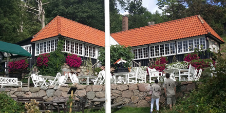
Där krattskogen slutar kommer på senvåren en mäktig doft av ramslök strax före Ransvik, badplatsen som fotografen Peter P Lundh gjorde vida känd i början av 1900-talet med vykort av badande kvinnor och män i randiga badkostymer. De tidiga ”gemensamhetsbaden” här sägs ha gett upphov till ryktet om ”synden i Mölle”. Trappor och en hiss leder ner till badplatsen och det sommaröppna Ellens Café i en byggnad delvis från 1915.
Vandringsleden fortsätter från P-platsen mellan trapporna och Mölle golfbana, men innan dess gör vi en liten avstickare till Jannes lycka och en backig genväg för den som vill återvända till Mölle.
- Arlid
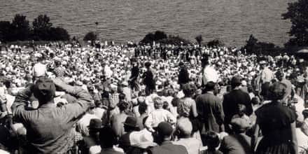
We’ll now get a first glimpse of Arild. Stop for a while and look over the hillside towards Skälderviken. In accordance with the exhibition H55 in Helsingborg, a naval exercise took place here in Ladarp July 24th 1955.
A grandstand had been built for prominent visitors, including the then Swedish Queen Louise. She was one of 125,000 people who attended “Operation Kullen”, containing 47 different ships. There are photographs of the minesweeping, artillery firing and anti-submarine warfare in Höganäs municipality's photo archive.
The spectators arrived in 25,000 cars, which were parked in the fields to the south. The road from Ängelholm was one-way here - everyone was going in the same direction - so you could drive in double files. After the event the one-way traffic went in the other direction.
Svensmalen is along Klötesvägen, east of Arild’s harbor, where the young Arild's body was said to have left an imprint. To get to Arild’s bus stop you can climb up the steps at Purras hill.
- Klotet
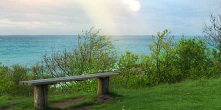
The nearest swimming area is Klötet, closely followed by an outdoor pool. Before we reach the next swimming area, we encounter a bear, gazing at the sea. This is one of the exciting sea-worn limestone pillars on this stretch. We are now inside “Lockens Grund” close to an old boat launching site. We’ll walk among grazing cows and sheep on former carriage roads. A popular location for outdoor weddings is a spot by a bench to the left. It was also here that Ingmar Bergman found a suitable environment in 1953 for scenes in the film Sawdust and Tinsel.
- Arlid-Skaret
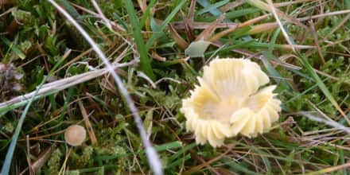
These are the three burial mounds and a stone circle called Nabben or Stensnäs with Nabbahögarna. According to Cilla Banck the small building was constructed of granite in the early 1800s also known as “Mother Bengta’s” house. “It was a time of large herring fisheries, when 3 boats went ashore at Stenenäs. That was why mother Bengta from Kjöge built this little house, she spent her time selling coffee to the fishermen who ported here”. She baked cakes, sewed baby clothes and sometimes sat on a rock in the harbor and knitted sweaters and hats that she sold. The road between Arild and Skäret, near Nabbavägen was named after her (Mor Bengtas väg). Along the road is a bathing area maintained by the residential area of Stenedal.
We are passing through a country lane surrounded by fences and gates for grazing animals. The land is a remnant of the old Kulla pastures, which were the common pastures for Kullen. In the autumn you will often find the little fungus Parrot Waxcap, which at the end of its growing period fools the inexperienced to think that it is a coltsfoot. Below the central houses on the hill is a small fen with grass and sedge vegetation and various mosses in the bottom layer. The pebble beaches clearly show how high the shoreline has been at different times.
When the schooner Elida was launched it all went wrong, which was perhaps an omen. It was repaired and launched again, but faired no better and disappeared in 1879 on the North Sea with a six-man crew. The entire crew were unmarried except captain Lock, who had a family. One of the votive ships in Arild’s chapel is a copy of Elida.
Fact - The self-taught travelling teacher and chapel caretaker Cilla Banck (1830 - 1906) collected curiosity objects for a small “home museum” and she kept a diary of events in the area. Her residence next to the chapel is now gone and the objects have become scattered, but her diaries have been preserved.
- Skäret
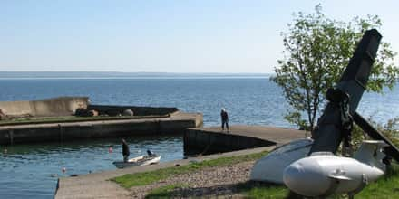
We’ll be approaching Skäret on a gravel road through a small scrubland area and after a pumping station. You can still winch boats down to the landing area in front of machine-gun post no. 776 and the subsequent bathing area. On the shore meadow you can see angelica, sea aster and sea plantain growing. Ivy-leaved toadflax, mullein, fern and forked spleenwort have their habitats on both sides of the harbor. The black tar lichen, verrucaria maura often forms black coatings on rocks out on the beach. We enter Skäret through Säldynevägen, named after a large flat stone, Säldynan. Säldynan is a favourite spot for seals.
Skäret is the youngest harbor of the former Brunnby parish and one of the younger in Kullabygden. The name simply means "rock". Initially boats were moored within a few hillocks, but in 1870 they started to build the harbor. Among others, stones, at least 25 centimetres thick, were dragged out in the winter and were laid on the ice, according to a well thought out plan, so that they fell down and formed the bottom of the harbor when the ice melted. Next to the harbor is Skäret’s art gallery, which is famous for being the smallest in the country. After ten years of exhibitions, the museum now takes in visiting artists, “artists in residence”.
The community first consisted of two parallel streets, Grönadalsvägen and Sofias väg, which was named after Sofia Persson. Sofia lived in the extended house at the eastern end of Grönadalsvägen. Sofia raised more than twenty foster children and her own daughter. Her husband, Olof, built the unusual one brick wall that we’ll get a glimpse of heading towards the windbreak.
After the settlement, a steep hill with twelve iron-shod steps leads up to the summer cottage area at Plidehallsvägen.
At Tvättehallsvägens end you can find Svanshalls other bathing areas whose stone outcrops exhibit fossils of sea urchins.
- Rekekroken

The most interesting part in Renekrok is situated below Gustav's place at the water's edge - the Cambrian quartzite. This is one of the few places in Sweden where it is exposed, but the whole community rests on 400 - 600 million year old foundations. In the Litorinavallen above there are quartzites in a disintegrate state. The picture was taken in 2014.
But the community is quite young. During the latter part of the 1800s many farmers moved out of their fishing huts during the herring season, and eventually the “sailor fisherman” settled on the farmers' common property, the beach gravel.
- Jonstorp
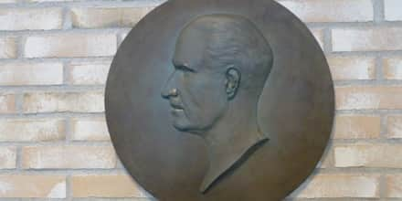
Many findings from the Stone Age have been made in Jonstorp and the older neighbouring village Görslöv. The Jonstorp area is one of the most important locations in Sweden for those who want to study coastal Neolithic cultures. The initiator of the excavations was Oskar Lidén (1870-1957), who served as headmaster at the elementary school in Jonstorp 1909-1919. His activities are still based for modern-day archaeologists. The library in Jonstorp, at Lidéns plats, houses a part of the stone collection he donated to a small Stone Age museum. Grateful Jonstorp villagers and students honored him with a bronze plaque by Helsingborg artist Folke Svensson, also now in the library. Several streets in the residential area on the former mill hill have names that are associated to him and his finds, for example, Lidéns väg and Fornminnesvägen, where the sea wall was covered with Neolithic finds.
The sandy beach is shallow and therefore ideal for families with small children, perhaps one reason why the summer cottage settlement was established here in the 1930-1940s beneath the old farms. The sand dunes are two-three metres high and are bound by grass and sand sedge. On the narrow coastal heath endangered plant species such as adder's-tongue, cross-leaved heath, common moonwort and lesser butterfly-orchid intermingle with much more common plants.
In mid-June, we found a number of species adjacent to the beach: tufted grass, early marsh orchid, silverweed, mouse-ear hawkweed, white clover, thrift, blue bonnets, bird's-foot trefoil, meadow pea, and hop trefoil, common rush, grey hair-grass, German knotweed, English plantain, orchard grass, wild angelica, marsh and creeping thistle as well as the lesser butterfly-orchid in an area of just a few square metres.